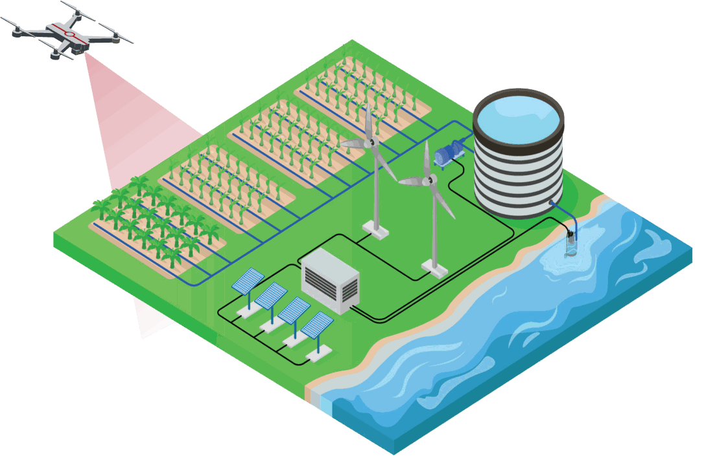
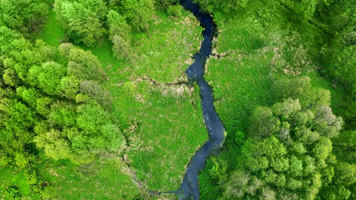
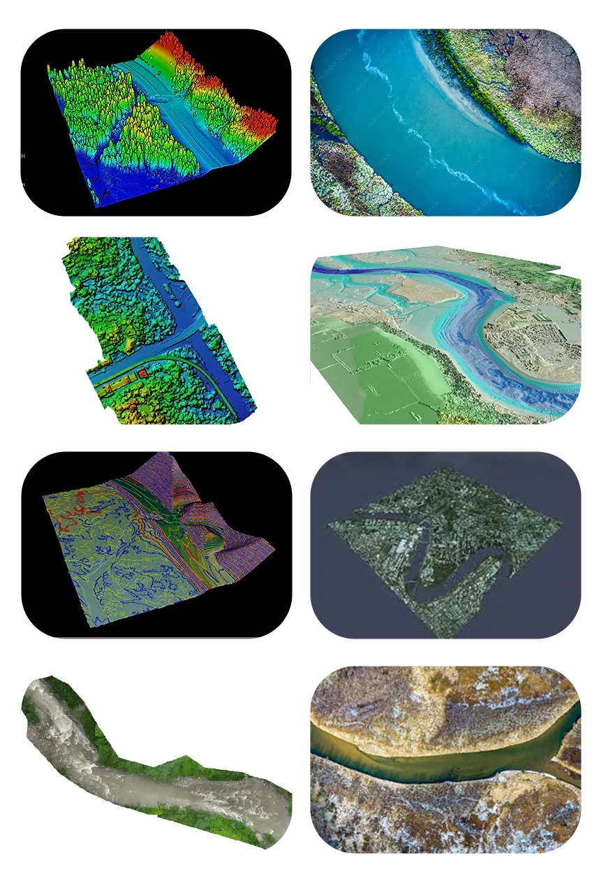
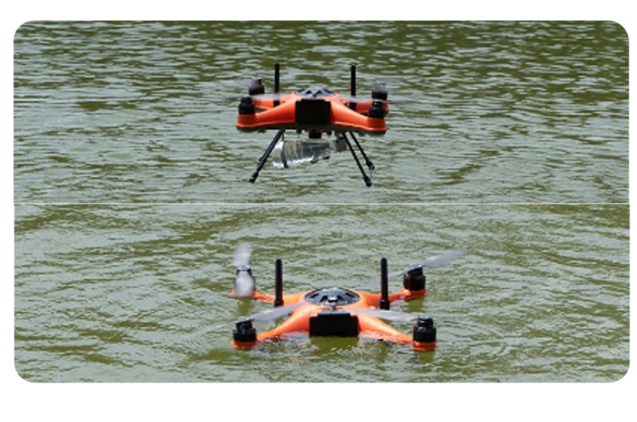
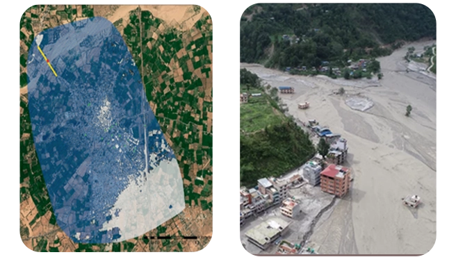

Drone Survey for Water Resources

Monitoring Of Natural Water Resources
We offer drone services to monitor natural water resources like rivers and lakes.

Datapkt captures high-quality drone video and photographs of water bodies, irrigation systems and related infrastructure. The imagery helps identify erosion, sediment build-up and vegetation encroachment, and supports maintenance planning, environmental monitoring, project documentation and stakeholder communication.
- Drone inspection helps find problems in water resources early, so maintenance and conservation work can start before they escalate.
- Repeat high-resolution imagery maps changes in water features over time, showing environmental trends.
- Up-to-date visual data can be shared with all stakeholders, supporting coordination and compliance with regulatory requirements.
We provide airborne data for river restoration projects, which can be useful in numerous aspects of planning, implementation, and monitoring. Here are a few services where we use this data:
-
Aerial Surveys and Mapping
Our drones, fitted with high-resolution cameras and LiDAR sensors can collect precise aerial photography and elevation data along river routes. This data can be used to construct precise topographic maps, detect areas of erosion and sedimentation, and evaluate the overall health of the river ecosystem.
-
Watershed area management
Our services for watershed project management include runoff estimates and water tables that are spatiotemporally correct. This integrates with complete 3D models (survey and mapping) that analyze riverbank migration, erosion, and wetland state (regression or development).
Drones are able to complete tasks such as accurate planning and surveying of all construction, as well as the first mapping of drainage lines and contours. They provide more assistance in slope analysis. This is all integrated with GIS and real-time weather data to forecast the amount of water that can be effectively gathered and used.
-
Bathymetric mapping
We provide bathymetric mapping to calculate the depths and volumes of rivers, lakes, and other water bodies.
-
Hydrological Analysis
We offer aerial data that can be used to collect information about water flow, sediment transport, and erosion patterns in river channels. This information assists our technical team in understanding the dynamics of the river system and developing successful restoration plans to improve flow regimes and sediment balance.
-
Monitoring of Vegetation
Our drone services coupled with multispectral or hyperspectral sensors are able to evaluate the distribution and health of the vegetation along riverbanks. We monitor shifts in the amount of vegetation cover that can reveal information about the health of the ecosystem, the condition of the habitat, and possible sites for habitat improvement or restoration.
-
Sedimentation management
Our aerial data can help with sediment management by tracking the processes of erosion and deposition of silt in river channels. With this data we can determine where sediment removal or redistribution may be required to preserve channel stability and aquatic habitat by routinely surveying places where sediment accumulates.
-
Assessment of Habitat
We survey and map riparian habitats, wetlands, and other critical habitat types along the river corridor. By using this data, restoration activities to improve ecosystem resilience and biodiversity can be prioritized in areas with deteriorating habitat conditions.
Real-time monitoring allows for timely adjustments and maintenance to prevent further erosion and habitat degradation.


Our drones carry sensors that record water quality parameters such as pH, temperature, turbidity, chlorophyll-a and oxygen levels. We also track aquatic vegetation growth, detect riverbank erosion and assess the effect of human activity on the environment and wildlife, so changes and risks can be identified and acted on.
We also collect water samples from remote areas, which matters for utilities serving wide areas or rural communities. Drone sampling protects both the water sources and the staff who maintain them.
- Sensor-equipped drones record pH, temperature, turbidity, chlorophyll-a and oxygen levels for environmental assessment and management.
- Remote water sampling gives timely water quality results for rural communities and large utility networks.
Our drones capture detailed images of flood-affected areas, which are used to build maps and 3D models of the flood zone.
These maps and models can help water utilities to identify areas that are at risk of flooding and prioritize their response efforts accordingly.
Current data helps emergency responders prioritise and allocate resources during floods. We assess the extent of flood damage, identify areas at risk and monitor water levels in real time.
This information can help water utilities to make informed decisions about deploying resources and personnel to areas that need the most help.

Our Features
Expertise in Hydrological Monitoring
We apply hydrological knowledge to our survey work, because water resource decisions depend on accurate data.
Our hydrologists and drone pilots work together to monitor rivers, lakes, reservoirs and watersheds.
Advanced Drone Technology
We operate DJI and custom-built drones with sensors suited to water resource monitoring and analysis.
Our drones capture high-resolution, thermal and multispectral imagery, used to assess water quality, flow patterns and vegetation health.

Efficiency and Cost-Effectiveness
Drone monitoring of water resources is more efficient and economical than traditional methods.
It reduces manual fieldwork and the need for costly equipment, lowering project costs for clients.
Environmental Stewardship
We aim to support sustainable water resource management.
Drone monitoring helps identify pollution, erosion and habitat degradation so they can be addressed and water resources conserved.
Clientele
Clientele
Frequently asked questions
How are drones used in water resources projects?
Drones survey canals, rivers, embankments and reservoir shorelines to produce terrain models, cross-sections and maps for design, repair and monitoring.
Can a drone survey measure underwater depth?
Standard drone cameras do not see through water, so depth is measured by a bathymetry survey with an echo sounder. The two datasets are merged into one model of the banks and the bed.
What outputs help canal design and maintenance?
Longitudinal and cross sections, bank and bed levels, contour maps, encroachment mapping and orthomosaics of the canal corridor.
Can drones help with flood studies?
Yes. An accurate terrain model of the catchment or floodplain is a key input to flood modelling and planning embankments and drainage.